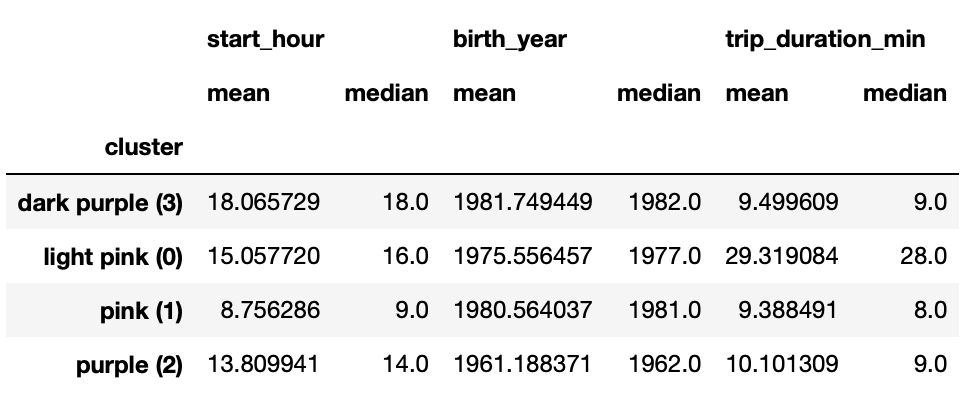

New York Citi Bike: Advanced Analysis
PROJECT OVERVIEW
Company
Citi Bike is a New York City bike share system. It is the nation's largest bike share program with 25.000 bikes and more than 1.500 stations in Manhattan, Brooklyn, Queens, the Bronx, Jersey City, and Hoboken.
Analysis Questions
When is the busiest time (hour/day) for users to start biking?
What is the average trip duration for each user category?
Is there a relationship between the start time of the ride and the duration of the ride?
Where is the busiest station?
Objective
This analysis is intended to explore Cite Bike user behavior through advanced analysis. Focuses on correlation/regression analysis, clustering, geographic analysis, and statistical models in machine learning analysis.
Context
This project was created with the aim of diving deeper into the use of Python tool and its libraries as a part of CareerFoundry's Data Immersion Program and to learn how to address the defined questions/hypotheses using advanced analytical techniques.
TOOLS AND SKILLS
TOOLS
- Python
- Pandas
- NumPy
- Seaborn
- Anaconda
- Matplotlib
- Jupyter Notebook
SKILLS
- Scikit-Learn
- Statistical Modelling
- Time-series Analysis
- Supervised Machine Learning: Regression
- Unsupervised Machine Learning: Clustering
PROCESS
Data
Original data sets used throughout the project:
- Title: Citi Bike Data
- Description: The dataset includes 330 bike stations in New York as of September 2013 with an original size of 50,000 rows and 18 columns
- Source: Kaggle
Step 1: Exploratory Data Analysis (EDA)
After sourcing data from Kaggle, I started my first step by doing EDA. From this step I got to know my data further by checking the variables, data types, etc. Here I also tried to derive my data to help me gain more insights that may not be readily apparent in my original data.

Some EDA process documentation: Sourcing Open Data and First Analysis.
Step 2: Exploring Relationship
Here I started digging deeper into my data. I used an aggregation function and started creating a heatmap to get some insights.
Rush hour occurs 2 times: around 8 am and again starts from 4pm and peaks between 5-6pm
Weekends (Saturday and Sunday) have fewer morning users compared to other days in the morning
Weekends (Saturday and Sunday) have users well spread throughout the afternoon until peak hours
Peak hours (8am and 5-6pm) are more dominated by users on weekdays
Step 3: Analysis
Regression Analysis
The line shows a linear relationship that changes direction:
Positive relationship: it starts increasing at 6:00 and reaches maximum at 15:00
Negative relationship: it starts decreasing at 16:00 and reaches minimum at 5:00
There are indications that the ride duration has a relationship with ride start time:
From 05.00 - 16.00: trip duration increases as the start time progresses
From 17:00 - 04:00: trip duration decreases as the start time progresses
Of all 3 time frames:
They produce small Mean Square Errors (MSE) on testing and training set
They produce values close to 1 for the R2 score
The relatively low MSE and high R-squared score indicate that the model predictions are close to the actual value so that the average trip duration can be explained by the start hour variable.
Cluster Analysis
I used a machine learning algorithm to perform k-means clustering on the data. Based on the results of the elbow method, I chose 4 clusters. Performing clustering analysis has helped me discover hidden and interesting group patterns that I could barely see before.

Descriptive analysis of each cluster:

Here 40110 number of users have been taken for this clustering analysis.
1. Dark purple (3) and pink (1) clusters:
These culsters accounted for 60% of the total presentations
These culsters dominated by younger users (with an average birth in 1980) compared to other clusters
The average trip duration is also shorter than other clusters, thus supporting previous findings that the younger the age, the faster the trip duration (with the average of trip duration 9.4 minutes)
2. Purple cluster (2):
This cluster is inhabited by elderly people compared to other clusters (with an average birth in 1961)
This cluster tends to ride during normal hours and will have fewer users in the early morning and late night. This is inversely proportional to clusters 3 and 1 above which tend to have more users in the early morning and late night
3. Light pink cluster (0):
This cluster seems to be a unique cluster whose users are evenly distributed based on age. This also has similarities with the previous cluster (2) where users tend to ride during normal hours
This cluster has the longest average trip duration, thus providing new insights because this cluster appears very different from other clusters in terms of average trip duration
This cluster has the smallest population compared to other clusters.
Busiest Stations
The busiest station to start:
Pershing Square N: ±17 rides daily with total 451 rides in September 2013
W 20 St & 11 Ave: ±17 rides daily with total 417 rides in September 2013
E 17 St & Broadway: ±16 rides daily with total 415 rides in September 2013
Lafayette St & E 8 St: ±16 rides daily with total 423 rides in September 2013
West St & Chambers St: ±15 rides daily with total 349 rides in September 2013
Time Series Analysis (Forecast)
First, I started determining my parameters (p, q, and d values). To be able to do this part, I had first to check the stationary of my data
Second, I splitted the data into test and training sets
Third, I run my model and perform several iterations along the process
Documentation: Time Series Analysis
Nearly all coefficients are significant (p <= 0.05) and the model appears to be a good fit because the forecast lines overlap with the actual lines. Therefore, there is a tendency for the value (ride count) to continue to decline at the weekend.
RESULTS
Insight and Conclusion:
Peak hours occur when people travel to work: at 08:00 (2,944 total rides), 17.00 (4,117 total rides), and 18.00 (3,983 total rides) in September 2013 which indicates that users might use Citi Bike to commute to work
Busy days: Weekdays (especially Friday)
Even though weekends seem to have fewer users (±4k-5k users compared to ±6k users on the weekdays), the average trip duration on weekends (±13 minutes) is slightly higher than on other days (±12 minutes). Further analysis shows that weekends have very low morning users compared to other days, this may be because people tend to wake up late on weekends so there are fewer morning users. And the increase in the duration of their trips may be because people enjoy cycling on weekends without rushing
In terms of user, Citi Bike is more dominated by male with twice the number of users compared to women. Female users tend to bike longer than male. The difference can be seen from 05:00 - 21:00 with most times being 2 minutes longer than male users
Younger people (with an average birth in 1980) have shorter average trip durations around 9.4 minutes and tend to have more users later in the night/mid night, while eldery (with an average birth in 1961) have a slightly higher average trip duration with fewer users in the middle of the night. Between 00:00 - 05:00 cluster shows that there are almost no elderly people cycling around that time
The busiest stations are Pershing Square N and W 20 St & 11 Ave with an average of about 17 rides per day
Forecast shows that this will repeat the pattern that at weekends the number of trips will decrease.
Full results:
Dashboard - Citi Bike
GitHub - Citi Bike
Next Step:
Next Step:
The clustering part was interesting because it gave me a glimpse of something I couldn't see before like the pink cluster group. Discovery of this pattern can go further and make it a go-to choice in data mining to gain further insights.
RETROSPECTIVE
Challenges during the project:
In this project I learned more about machine learning analysis. doing analyzing regression and clustering was a challenge at the time, especially when I had to figure out how to understand the algorithm behind the actual and predicted values (training/testing data)
I spent a lot of time in time series analysis because I had never learned about ARIMA before. I still need to learn the algorithm behind it
What have I learned:
I got to know more about machine learning for data analysis
The clustering part was an interesting part where I was able to see the value of user groups that I could barely see before
I learned geospatial analysis using Python, which was new to me
What I learned the most was the algorithm behind each code because there was a lot of new code that I had never used before, especially the machine learning part
Things I could do better:
I could have done better with my time management. I should break my projects into smaller parts so it's less stressful, especially if it requires me to learn new things
I reflect to myself that learning new things should be balanced with a sense of enjoyment in it (such as having more space or time for it), rather than doing it in a rush which can result in an unpleasant learning experience